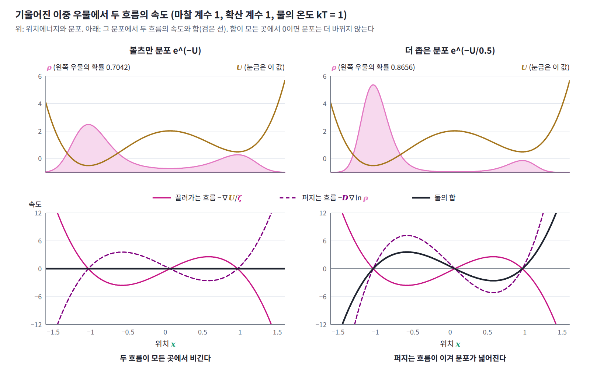
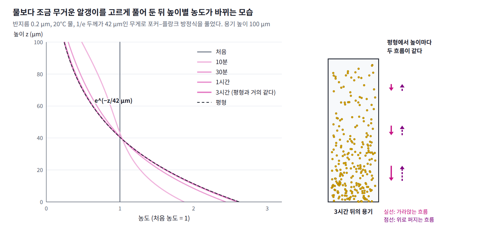

아인슈타인 관계: 흔드는 크기와 막는 크기
그렇다면 포커–플랑크 방정식을 오래 돌리면 분포는 어디에 이를까? 그리고 그 도착점은 물의 온도와 어떤 관계일까?
역사: 알갱이의 평형과 저항기의 잡음
아인슈타인은 1905년 논문에서 알갱이들에 바깥 힘이 걸린 상황도 생각했다. 힘에 끌려 한쪽으로 흐르는 알갱이의 양과 농도 차이 때문에 거꾸로 퍼지는 양이 비기는 평형에서, 확산 계수가 기체 상수 × 온도 ÷ (아보가드로 수 × 6π × 점성 × 알갱이 반지름)으로 정해진다는 것을 얻었다. 그는 17°C의 물과 지름 1000분의 1 mm인 알갱이를 넣어, 한 방향으로 1초에 약 0.8 μm, 1분에 약 6 μm 옮겨 간다고 예측했다. 이 식에서 알갱이를 흔들어 퍼뜨리는 정도(확산 계수)는 알갱이의 움직임을 막는 정도(점성 저항)와 온도로 정해진다. 흔드는 것과 막는 것이 같은 물 분자에서 나오기 때문이다.
흔드는 것과 막는 것의 관계는 아인슈타인의 논문이 나오고 20여 년 뒤 전기 회로에서 다시 나타났다. 1928년 벨 연구소의 존 존슨은 전류가 흐르지 않는 저항기의 양 끝에서도 전압이 쉬지 않고 흔들리며, 그 제곱 평균이 저항값과 절대온도에 비례함을 측정했다. 같은 연구소의 해리 나이퀴스트는 같은 해 이 잡음을 열역학으로 설명했다. 전하의 흐름을 막아 열을 내는 저항기가 곧 전하를 흔드는 원인이라는 것이다. 1951년 캘런과 웰턴은 에너지를 잃는 선형 계라면 어디서나 마찰의 크기와 온도가 잡음의 크기를 정한다는 일반적인 관계를 증명했고, 이 관계는 오늘날 요동-소산 정리(소산: 마찰로 에너지가 열이 되어 새어 나감)라 불린다.
두 흐름이 비기는 곳
두 흐름은 방향이 반대일 때가 많다. 에너지 골짜기에 입자가 모여 밀도가 높아지면, 끌려가는 흐름은 계속 골짜기 쪽으로 모으고 퍼지는 흐름은 골짜기 밖으로 흩는다. 두 흐름이 모든 곳에서 정확히 비겨 속도가 0이 되면 분포는 더는 바뀌지 않는다. 그 조건을 풀어 보자.
퍼지는 흐름과 끌려가는 흐름이 비기는 분포는 e^(−U/(ζD))이고, 이것은 ζD를 온도 자리에 둔 볼츠만 분포다. 온도 T인 물속의 알갱이들은 결국 볼츠만 분포 e^(−U/kT)에 이르러야 하므로 ζD = kT, 곧 D = kT/ζ여야 한다. 이 관계를 아인슈타인 관계 (확산 계수가 온도를 마찰 계수로 나눈 값과 같다는 관계, Einstein relation)라 하고, 스토크스 저항을 넣으면 아인슈타인이 1905년에 얻은 D = kT/(6π × 점성 × 반지름)이다. 식이 말하는 것은 분명하다. 온도가 정해져 있으면 입자를 흔드는 크기(D)와 입자를 막는 크기(ζ)를 따로 고를 수 없다. 둘은 같은 물 분자의 충돌에서 나오고, 그 곱이 온도다.
이것을 코드로 확인할 수 있다. 기울어진 이중 우물 U(x) = 2(x² − 1)² + 0.5x에서 볼츠만 분포(kT = 1)는 왼쪽 우물에 확률 0.7042를 준다. 랑주뱅 방정식을 ζ = 1, D = 1로 돌리면 왼쪽 비율이 0.7028, ζ = 2, D = 0.5로 돌리면 0.7002다. 둘 다 ζD = 1이라 같은 분포에 이르고, ζ는 도착하는 빠르기만 바꾼다. 반면 ζ = 1, D = 0.5로 돌리면 0.8657이 되는데, 이것은 kT = 0.5인 볼츠만 분포의 0.8656과 맞는다. 잡음을 줄이면 샘플러는 더 낮은 온도의 분포를 뽑는다.

일상 사례: 저항기의 잡음 전압
전기 회로의 저항기도 같다. 저항기는 전하의 흐름을 막아 전기 에너지를 열로 바꾸는 마찰이므로, 전류가 흐르지 않아도 저항기 양 끝에는 그 저항값과 온도로 크기가 정해진 잡음 전압이 생긴다.
이것이 존슨–나이퀴스트 잡음이다. 실온(300 K)의 1 MΩ 저항기를 주파수 폭 10 kHz로 재면 잡음 전압의 제곱평균제곱근은 약 12.9 μV다. 오디오 앰프의 볼륨을 끝까지 올렸을 때 들리는 「쉬」 소리의 한 몫이 이 열잡음이고, 아주 약한 신호를 재는 전파 망원경의 수신기를 극저온으로 식히는 까닭도 여기에 있다.
코드로 확인하기
이 계산을 그대로 돌리는 코드다. 경사하강에 붙이는 잡음의 크기를 바꿔 가며 도착하는 분산을 재고(첫머리의 수), 기울어진 이중 우물에서 마찰 계수와 확산 계수를 바꿔 가며 볼츠만 분포와 비교한다.
import numpy as np
rng = np.random.default_rng(0)
# (1) 경사하강에 잡음을 더하기: U(x) = x²/2, 곧 목표는 표준정규분포 (kT = 1)
for eta in (0.1, 0.01):
for label, s in (("잡음 없음", 0.0), ("잡음 η·z", eta), ("잡음 √(2η)·z", np.sqrt(2 * eta))):
x = np.full(4000, 3.0) # 사슬 4000개를 x = 3에서 출발
for _ in range(int(30 / eta)): # 시간 30만큼 걷는다
x = x - eta * x + s * rng.standard_normal(x.size)
print(f"η = {eta:<4}: {label:10s} → 평균 {x.mean():+.3f}, 분산 {x.var():.4f}")
# (2) 기울어진 이중 우물: U(x) = 2(x² − 1)² + 0.5x 에서 볼츠만 분포 e^(−U/kT)와 비교
U = lambda x: 2 * (x**2 - 1)**2 + 0.5 * x
dU = lambda x: 8 * x * (x**2 - 1) + 0.5
grid = np.linspace(-3, 3, 60001)
for kT in (1.0, 0.5):
w = np.exp(-U(grid) / kT); w /= w.sum()
print(f"볼츠만 분포(kT = {kT}): P(x < 0) = {w[grid < 0].sum():.4f}, ⟨x²⟩ = {(w * grid**2).sum():.4f}")
def langevin(zeta, D, eta=2e-3, n=5000): # 시간 50을 버리고, 다음 50 동안 0.5마다 기록
x = rng.uniform(-2, 2, n); kept = []
for i in range(int(100 / eta)):
x = x - eta * dU(x) / zeta + np.sqrt(2 * D * eta) * rng.standard_normal(n)
if i >= int(50 / eta) and i % int(0.5 / eta) == 0: kept.append(x.copy())
return np.concatenate(kept)
for zeta, D in ((1.0, 1.0), (2.0, 0.5), (1.0, 0.5)): # 마지막만 D·ζ ≠ kT
x = langevin(zeta, D)
print(f"ζ = {zeta}, D = {D} (D·ζ = {D * zeta}): P(x < 0) = {np.mean(x < 0):.4f}, ⟨x²⟩ = {np.mean(x**2):.4f}")
# η = 0.1 : 잡음 없음 → 평균 +0.000, 분산 0.0000
# η = 0.1 : 잡음 η·z → 평균 +0.006, 분산 0.0516
# η = 0.1 : 잡음 √(2η)·z → 평균 +0.002, 분산 1.0405
# η = 0.01: 잡음 없음 → 평균 +0.000, 분산 0.0000
# η = 0.01: 잡음 η·z → 평균 +0.001, 분산 0.0051
# η = 0.01: 잡음 √(2η)·z → 평균 -0.013, 분산 0.9972
# 볼츠만 분포(kT = 1.0): P(x < 0) = 0.7042, ⟨x²⟩ = 0.8815
# 볼츠만 분포(kT = 0.5): P(x < 0) = 0.8656, ⟨x²⟩ = 0.9710
# ζ = 1.0, D = 1.0 (D·ζ = 1.0): P(x < 0) = 0.7028, ⟨x²⟩ = 0.8792
# ζ = 2.0, D = 0.5 (D·ζ = 1.0): P(x < 0) = 0.7002, ⟨x²⟩ = 0.8802
# ζ = 1.0, D = 0.5 (D·ζ = 0.5): P(x < 0) = 0.8657, ⟨x²⟩ = 0.9700
잡음이 √(2η)이면 분산이 학습률과 상관없이 1 근처에 머물고, η에 비례하면 분산이 η/2로 줄어든다. 이중 우물에서는 ζD가 같으면 ζ가 달라도 같은 분포에 이르고, ζD = 0.5이면 kT = 0.5인 볼츠만 분포에 이른다.

문제 2. 가라앉는 알갱이
물보다 조금 무거운 작은 알갱이들이 시험관의 물속에 퍼져 있다. 부력을 뺀 알갱이 하나의 무게가 w, 마찰 계수가 ζ, 확산 계수가 D다. (가) 충분히 오래 두면 알갱이들은 모두 바닥에 가라앉는가? (나) 높이 z에 따른 농도는? (다) 페랭이 잰 감보지 알갱이의 수는 높이 5, 35, 65, 95 μm에서 100 : 47 : 22.6 : 12였다. 여기서 무엇을 알 수 있는가?

무게가 계속 아래로 당기니까 시간만 충분하면 다 바닥에 쌓이죠. 가라앉는 속도가 w/ζ로 일정하니까 언젠가는 다 내려가요.

바닥에 몰리면 아래로 갈수록 농도가 높아지니까 퍼지는 흐름은 위로 가. 아래로 끌려가는 흐름 ρw/ζ와 위로 퍼지는 흐름 −D dρ/dz가 비기면 거기서 멈추지.

식으로 풀어 보세요.

ρw/ζ = −D dρ/dz니까 ρ ∝ e^(−zw/(ζD))예요. 높이 ζD/w마다 1/e로 줄어요. 다 쌓이는 게 아니라 두께가 ζD/w인 층이 생겨요.

아, 공기도 그렇네요. 공기 밀도가 8.4 km마다 1/e로 줄어든다던 기압 공식이요. 그때는 볼츠만 분포로 풀었는데.

볼츠만 분포로 풀면 층 두께가 kT/w잖아. 흐름으로 푼 두께는 ζD/w고. 같은 분포여야 하니까 ζD = kT, 곧 D = kT/ζ네.
아인슈타인이 1905년에 바로 이 논리로 확산 계수를 구했어요. 만약 ζD가 kT와 다르다면 무슨 일이 생길까요?
층 두께가 물의 온도와 맞지 않는, 다른 온도의 볼츠만 분포가 돼요. 온도 T인 물속에서 알갱이들만 저절로 다른 온도가 되는 거니까 말이 안 되죠.

그래요. (다)는요?

30 μm 올라갈 때마다 0.47, 0.48, 0.53배예요. 맞춰 보면 1/e 두께가 약 42 μm요. 공기는 8.4 km인데.

kT가 같으니까 두께의 비는 무게의 비를 뒤집은 거야. 감보지 알갱이 하나의 알짜 무게가 공기 분자의 약 2억 배네.
맞아요. 알갱이의 크기와 밀도에서 w를 구하면 두께로 k를 얻고, 기체 상수를 k로 나누면 아보가드로 수가 나와요. 흔드는 정도와 막는 정도를 재면 분자 하나의 크기가 보이는 거예요.